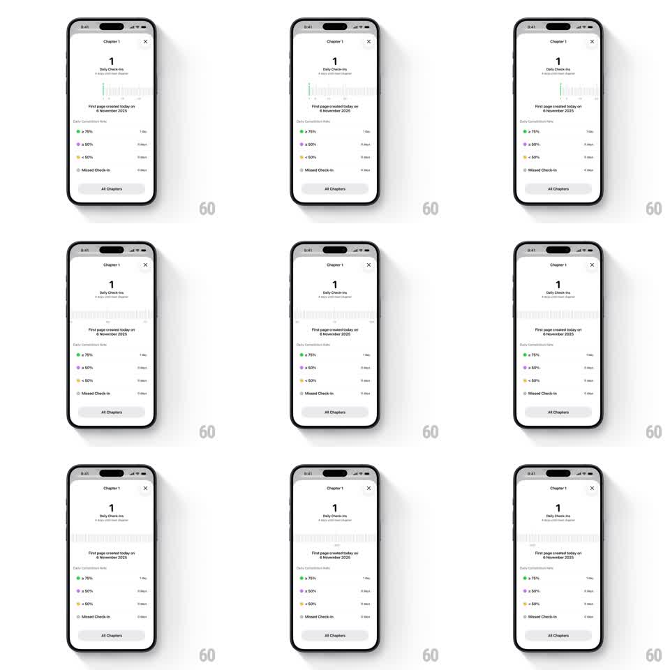

Media
Frame-by-frame

Rebuild this interaction 1:1: Habitastic's daily check-in timeline - a horizontal ruler of tick marks you scrub through your check-in history, with the stats below reading off the selected day.

Rebuild this interaction 1:1: Habitastic's daily check-in timeline - a horizontal ruler of tick marks you scrub through your check-in history, with the stats below reading off the selected day. ## Integration Integration: stack-agnostic spec - springs given as stiffness/damping, timed motions as duration + curve; map every value to your framework and animation library of choice. ## Scene Habitastic "Chapter 1" sheet, off-white: title + close X top, "1 Daily Check-Ins" count, the horizontal ruler timeline (rows of small grey tick marks, a green tick marking check-ins, a center cursor line), the "First page created today on 6 November 2025" note, the Daily Competition Stats legend (green >= 75%, purple >= 50%, yellow < 50%, grey Missed Check-in, each with a day count), and an "All Chapters" button. ## Motion spec Pattern: ruler-style horizontal timeline scrubbing. - Drag the ruler: ticks track the finger 1:1 with rubber-band resistance at both ends (max 30px overscroll, springing back at ~300/20). - On release the ruler decelerates naturally and snaps the nearest day-tick to the center cursor (spring ~320/18, ~5px settle overshoot). - The tick at the cursor enlarges and tints: green for a check-in day, grey for a miss (scale 1 -> 1.5, 150ms) as it crosses center; it shrinks back as it leaves. - While scrubbing, the date note under the ruler updates live, crossfading per day change (120ms); the stats counts hold until the scrub settles, then tick to the selected range (number roll, 200ms). - Ticking haptic: one light tick per day crossing the cursor. ## Calibration - Tick density is one tick per day, with a slightly taller tick at week boundaries. - The ruler scrolls, the cursor is fixed - never move the cursor line. ## Reduced motion Ruler pans without snap springs or tick scaling; dates swap without crossfade. ## Don't miss - The green check-in tick is the only saturated element on the ruler - it must pop at a glance. - The legend rows below keep their exact color coding (green, purple, yellow, grey).